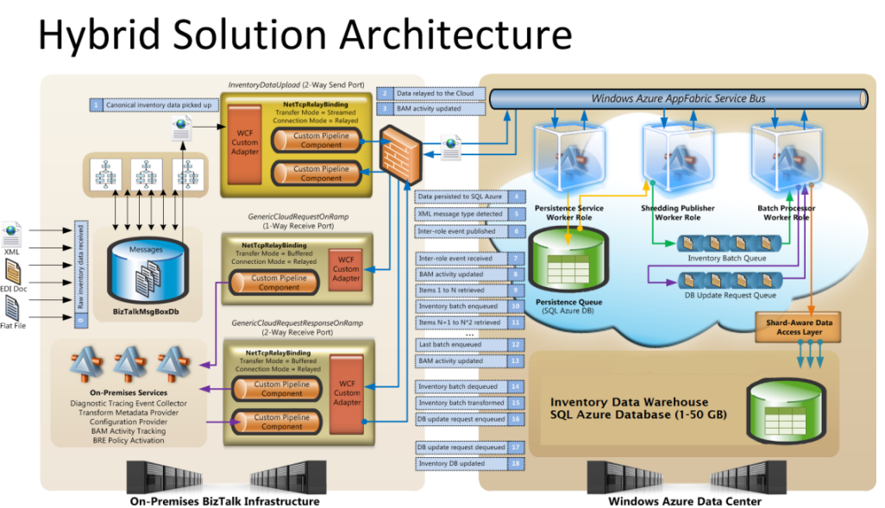

Integrating an on-premises process with processes running in Windows Azure opens up a wide range of opportunities that enable customers to extend their on-premises solutions into the Cloud environment.
Based off real-world customer projects led by the Windows Azure Customer Advisory Team (CAT), this reference implementation comprises of a production quality, fully documented hybrid solution that demonstrates how customers can extend their existing on-premises BizTalk Server infrastructure into the Cloud. The solution is centered on the common requirements for processing large volumes of transactions originated from the on-premises system and off-loaded into the Windows Azure to take advantage of elasticity and on-demand compute power of the Cloud platform. The reference implementation addresses the above requirements and provides an end-to-end technical solution architected and built for scale-out.
The main technologies and capabilities covered by the reference implementation include: Windows Azure platform services (compute, storage), Windows Azure Service Bus, SQL Azure and BizTalk Server 2010.
The reference implementation is founded on reusable building blocks and durable patterns widely recognized as “best practices” in Windows Azure solution development.
This project is implemented as a hybrid solution in which BizTalk Server represents a fundamental dependency. Logically, the BizTalk Server customers can install and use the reference implementation with a minimum of modifications. However, the solutions also carry many of the reusable patterns and building blocks which the developer audience could explore in isolation from the larger end-to-end reference implementation.
The BizTalk Server 2010 is a core element in the hybrid solution architecture. The transactions that need to be processed on the Cloud are originated from a BizTalk application running on the premises. The BizTalk application is also used for hosting the service endpoints which make mission-critical capabilities such as data transformation, BAM and BRE available to the cloud-based applications.
The BAM is used to store activities that are generated and tracked by the BizTalk Sever application and cloud-based services. All activities are collected into an on-premises BAM database and visible through the BAM portal.
The BRE is used by both the on-premises BizTalk application and cloud-based services to power up the decision making and define the operational aspects of the data processing on the Cloud. In addition, the BRE is utilized for authorizing and managing complex application configuration used by the hybrid solution. Lastly, the BRE policies provide the extensibility mechanism upon which custom activities can occur at runtime depending on type or content of messages flowing from and to the BizTalk application.
The BizTalk Mapper tool is used to author complex XML transformation rules and package them into maps. The BizTalk maps are then executed on the Cloud to transform XML documents between canonical and custom schemas.
The Service Bus provides the endpoint in the Cloud through which all traffic between the on-premises and cloud-based services (both directions) are securely relayed. The Service Bus is also leveraged to provide the inter-role communication between worker roles running on the Windows Azure platform.
The worker role provides the processing of messages, pulling each message from the queue, and shredding the collection of records into individual records that are stored in the SQL Azure database.
The storage queues are used to hold references to messages that are in line to be processed. Because the size of each item in the queue is limited to 8K, the actual messages are stored temporarily in a blob storage.
The SQL Azure database provides durable persistence of the business transactions on the Cloud. The large transaction sets are stored in a SQL Azure database from which they are shredded (debatched) into smaller XML documents and are dispatched for processing.
The following diagram depicts the architecture of the hybrid reference implementation:

This description is not intended to be fully reflective in the depth and details of the hybrid reference implementation. For more information, please visit the Windows Azure CAT blog.